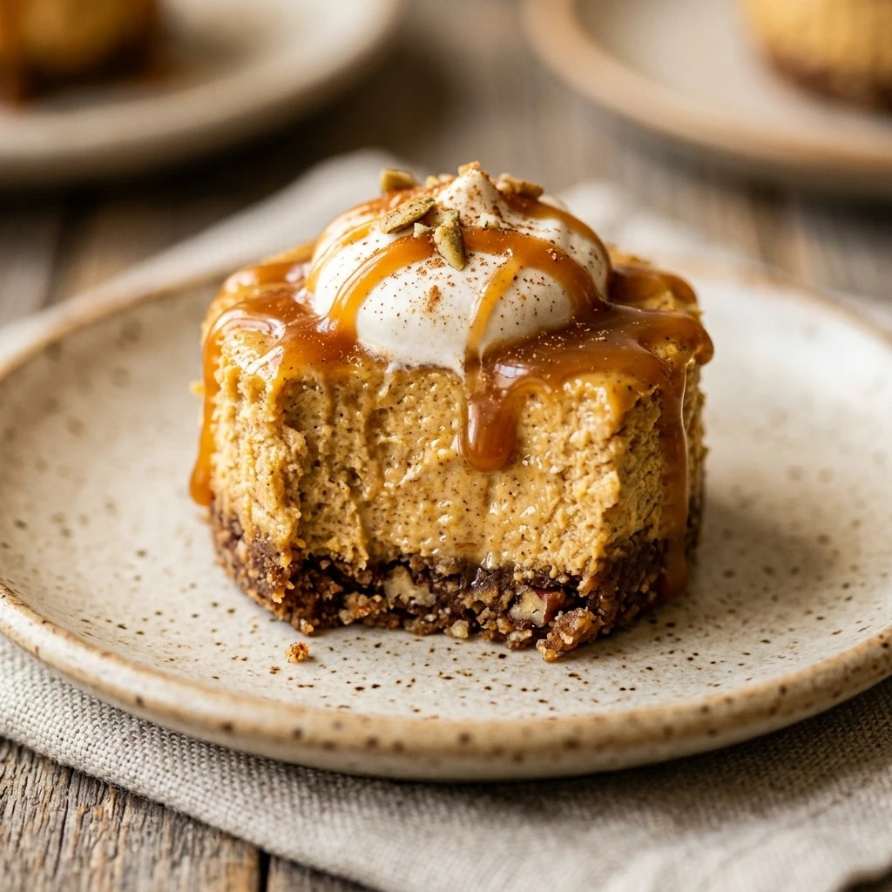

High Protein Pumpkin Cheesecake Bites Recipe
October 17, 2026

If you love the warm, cozy flavors of fall but want to stay on track with your fitness goals, these High Protein Pumpkin Cheesecake Bites are a total game-changer. They offer all the creamy, spiced goodness of a traditional pumpkin cheesecake but with a fraction of the calories and a massive boost of protein. Whether you need a post-workout treat or a healthy snack to satisfy your sweet tooth, these little bites are the perfect solution.
Recipe Information
Prep Time: 15 minutes
Cook Time: 25 minutes
Total Time: 40 minutes
Servings: 12 bites
Difficulty Level: Easy
Nutrition Information
Calories per serving: 85 kcal
Protein: 8g
Carbohydrates: 7g
Fat: 3g
Fiber: 1g
Sugar: 3g
Sodium: 110mg